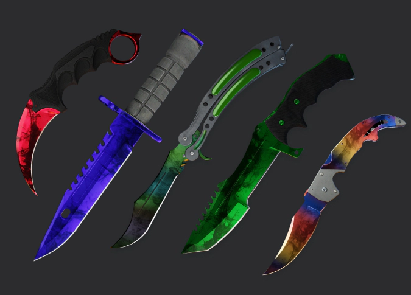
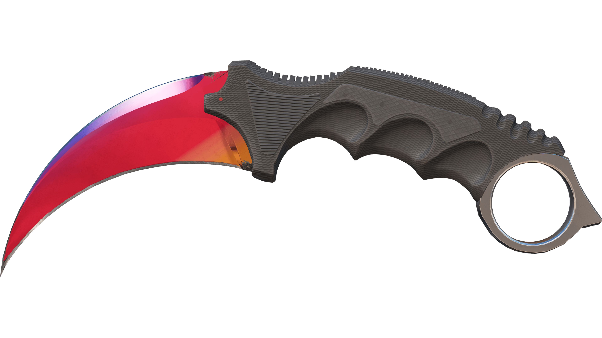
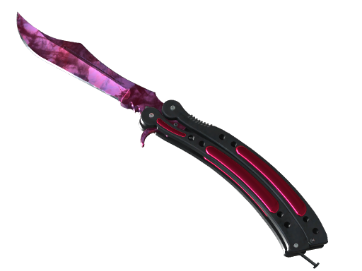
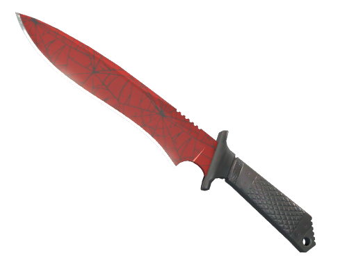
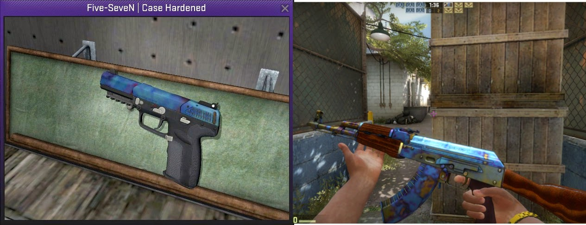
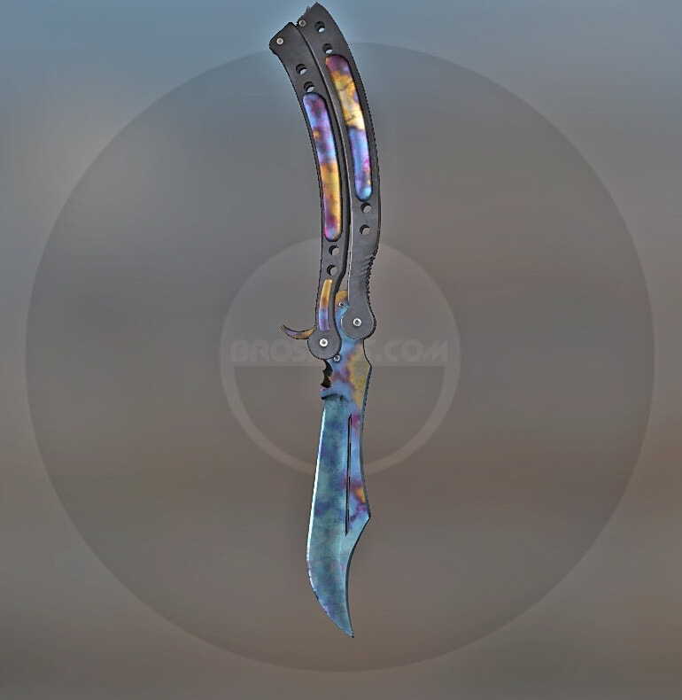
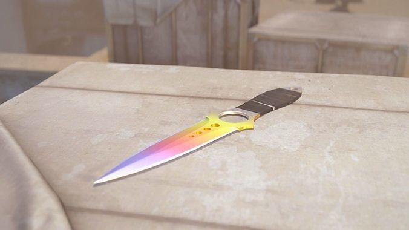

Premium Knife Collections

Knife skins represent the pinnacle of CS:GO collectibles, often commanding the highest prices in the market. Their rarity, visual appeal, and status symbol nature make them prized possessions among players and investors alike.
Karambit
- Distinctive curved blade inspired by tiger claws
- Among the most sought-after knife designs
- Popular patterns: Fade, Doppler, Crimson Web
- Price heavily influenced by "corner" quality
Butterfly Knife
- Known for unique flipping animation
- High demand due to visual appeal
- Popular patterns: Fade, Marble Fade, Slaughter
- Value affected by "spine" quality
M9 Bayonet
- Large blade with tactical design
- Distinctive serrated back edge
- Popular patterns: Crimson Web, Doppler Phase 2, Lore
- Hole pattern affects Crimson Web pricing
Classic Knife
- Original Counter-Strike knife design
- Nostalgic value for long-time players
- Popular patterns: Fade, Slaughter, Crimson Web
- Added in the CS20 Case (2019)
Knife skin prices are heavily influenced by pattern variations, with certain attributes commanding significant premiums:
Fade Patterns
- Full Fade: Contains maximum possible color saturation (90-100%)
- True 100% Fade: Displays the complete color spectrum with purple extending to the hilt
- Fake 90/95% Fade: Has less purple coverage than full fades
- Price difference: Up to 40% premium for true 100% fades
Doppler Phases
- Phase 1: Black with pink accents
- Phase 2: Pink-dominant pattern (most valuable standard phase)
- Phase 3: Green/dark pattern (least valuable)
- Phase 4: Blue-dominant pattern
- Ruby: Solid red/pink pattern (extremely rare)
- Sapphire: Solid blue pattern (extremely rare)
- Black Pearl: Dark iridescent pattern (rarest)
- Price difference: Special patterns (Ruby/Sapphire/Black Pearl) can be 5-10x more expensive than standard phases
Crimson Web Patterns
- Web Placement: Center webs are most valuable
- Web Count: More webs = higher value
- Web Size: Larger webs command premium prices
- Price difference: Perfect web patterns can add 25-50% to value
Top Knife Finishes

Fade
$600 - $2,500+
The Fade finish features a gradient blend of colors, typically yellow at the handle transitioning to pink and purple at the tip. Full fades with high purple percentage command premium prices.
Premium Pattern-Based

Doppler
$400 - $5,000+
Doppler finishes feature swirling patterns of color on a dark base. Special phases like Sapphire (blue), Ruby (red), and Black Pearl (dark iridescent) are extremely rare and valuable.
Luxury Pattern-Based

Crimson Web
$300 - $10,000+
Featuring a deep red base with black web patterns, these knives vary in value based on the number and placement of web formations. Factory New versions are extremely rare.
Luxury Collector
Case Hardened
$200 - $100,000+
Case Hardened patterns feature unique blue, gold, and purple patterns. The extremely rare "blue gem" patterns with high blue percentages can command extraordinary prices.
Ultra-Luxury Pattern-Based
Case Hardened Patterns
Case Hardened knives are valued based on their pattern index, which determines the distribution of blue, gold, and purple coloration. Here are some notable patterns:

Pattern #387
$20,000 - $100,000+
Karambit #387 "Blue Gem"
The legendary "Blue Gem" pattern for Karambit with near-complete blue coverage. One of the most valuable knife patterns in CS:GO history.
Last sold for over $100,000 to a Chinese collector.
Pattern #661
$15,000 - $75,000+
AK-47 "Scar" Pattern
Though primarily an AK-47 pattern, this also creates premium blue coverage on knives, with clean blue distribution.
Named for the distinctive dark "scar" that appears on AK-47 versions.
Pattern #555
$10,000 - $60,000+
The "Honorable Mention"
Features extensive blue with minimal gold intrusions. Popular for both knives and AK-47s.
Slightly less valuable than the #661 but still extraordinarily rare.
Pattern #670
$8,000 - $50,000+
The "Reverse Scar"
Features extensive blue coverage with the characteristic dark spot in a different position than the #661.
Most valuable on AK-47s but creates premium knife patterns as well.
Investment Outlook
Knife skins generally retain value well over time, especially limited collections or those no longer dropping. When investing in knife skins, consider:
- Case Drop Rate: Typically 0.25-0.3%, making knives naturally scarce
- Specific Pattern Rarity: Fade percentage, Doppler phase, Case Hardened blue percentage
- Wear Rating: Factory New is rarest for Crimson Web, Ultraviolet, Night
- Collection Availability: Discontinued cases create long-term supply constraints
- StatTrak™ Variants: StatTrak knives are approximately 10x rarer than non-StatTrak
- Vibrant Colors: Typically command higher prices (Fade, Doppler)
- Clean Patterns: Distinguishable patterns preferred over muddy ones
- Animation Quality: Butterfly and Karambit animations boost desirability
- Visual Flaws: "Corner" quality on Karambit, "spine" quality on Butterfly
- Pattern Consistency: Evenly distributed patterns more desirable than random
- Professional Player Usage: Can drive sudden demand increases
- Discontinued Cases: Increase scarcity over time
- New Knife Releases: May temporarily affect market
- CS2 Visual Updates: Enhanced some finishes, boosting value
- Chinese Collector Demand: Increasingly drives high-end market
Knife Pattern Gallery

